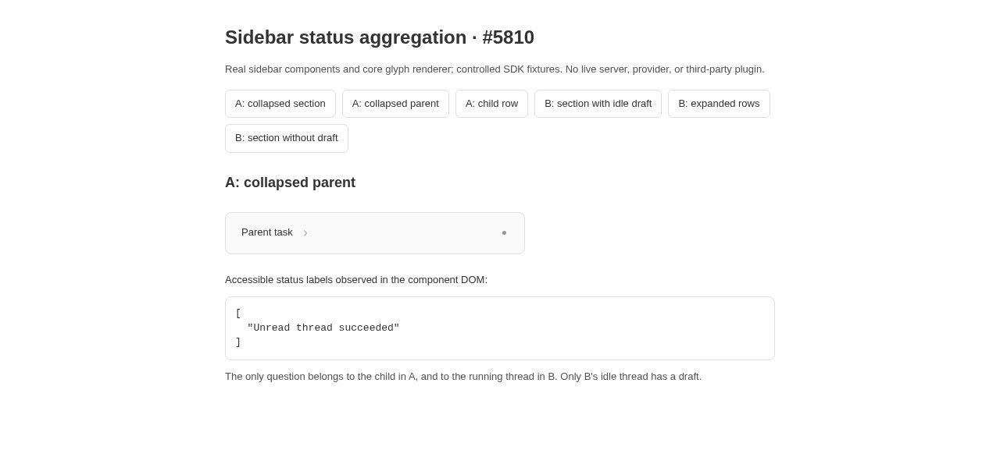
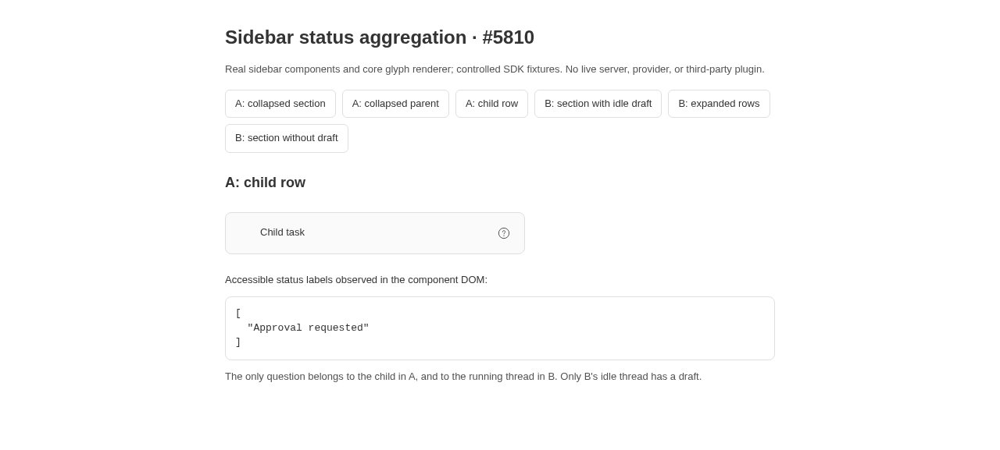
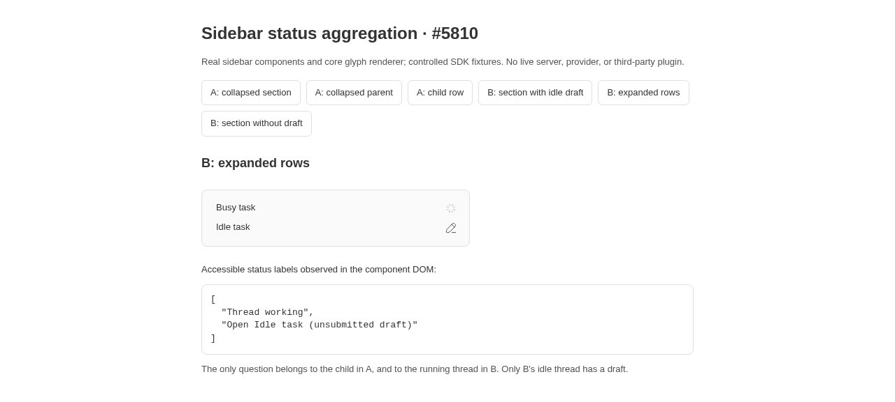

Sidebar aggregation loses thread ownership
Verdict: REPRODUCED · Root-cause confidence: high · Second clean run: verified by the same agent.
1. Summary
Two sidebar rollup failures reproduce on trusted main. A collapsed parent drops a question owned by its hidden child, even though the collapsed section and the child itself expose that question. Separately, a draft owned by an idle thread changes a section containing a running thread from a spinner to a question. This is an ownership error in aggregation, not a polling delay. The defects are demonstrated with newly authored component tests and real production glyph rendering.
2. Claims versus findings
| Claim tested | Finding | Evidence |
|---|---|---|
| Hidden-child question disappears at the collapsed parent. | Verified | A: section and child show Approval requested; parent shows only unread success. |
| Another thread’s draft exposes a running owner’s suppressed question. | Verified | B: section with idle draft shows a question; expanded busy row shows a spinner; removing only the idle draft restores the section spinner. |
| Third-party plugin polling, organizer routing, and a full application session. | Not exercised | Controlled SDK data isolates the core owner boundary. No third-party code, inbox reconciliation, or live provider was run. |
3. Environment and trust
- Repository: public get-bb/bb. Both runs use trusted origin/main at
7e4232ef241b5cdfb7d272cee044fe6f82702c70. - Linux 4.19.0-gvisor; Node v22.19.0; pnpm 9.15.0; package Vitest 4.1.1 and jsdom 29.0.1.
- Chrome for Testing 155.0.8059.84, clean headless Browser Automation session; browser captures are JPEG at 960 or 1280 pixels wide.
- Component fixture server: loopback port 45810. No BB instance, database, provider session, or production runtime data is used. Unit runs need no ports or data directory.
- Issue content was treated as untrusted claims. Its commands and branch were not run, and its external evidence links and attachments were not fetched. The linked PR was read only as untrusted GitHub metadata and a static diff.
4. Minimal reproduction
In a clean trusted checkout at the recorded commit, save the two inline source blocks below into plugins/thread-list/app/list/slopcop-5810.test.tsx and plugins/thread-list/app/list/slopcop-5810.fixture.tsx. Run these commands from the repository root:
git checkout 7e4232ef241b5cdfb7d272cee044fe6f82702c70 pnpm install --frozen-lockfile --prefer-offline pnpm exec turbo run build --filter=@get-bb/plugin-sdk pnpm exec turbo run build
pnpm exec turbo run test --filter=bb-plugin-thread-list -- slopcop-5810.test.tsx
- A: render a collapsed section containing an unread idle parent and an idle child. Give only the child an Approval requested plugin status. Render the parent alone while it remains collapsed, then the child alone.
- B: render a section containing a busy thread and an idle thread. Give the busy thread the question and only the idle thread a composer draft. Compare the collapsed section to its expanded rows, then repeat without the idle draft.
Expected: A retains the hidden child’s question at the collapsed parent, subject to existing row precedence. B resolves each owner’s status before comparing rows; the unrelated draft cannot unmask the busy owner’s question.
Actual: both runs fail only the two deliberate regression assertions:
AssertionError: expected null to be 'Approval requested' AssertionError: expected 'working-draft' to be 'runtime'
Raw SDK-boundary observations (duplicate section entries are its responsive glyph copies):
{"scenario":"child","section":[{"indicator":"unread-success","question":"Approval requested"},{"indicator":"unread-success","question":"Approval requested"}],"parent":[{"indicator":"unread-success","question":null}],"child":[{"indicator":"none","question":"Approval requested"}]}
{"scenario":"draft","noDraft":[{"indicator":"runtime","question":"Approval requested"},{"indicator":"runtime","question":"Approval requested"}],"withDraft":[{"indicator":"working-draft","question":"Approval requested"},{"indicator":"working-draft","question":"Approval requested"}],"rows":[{"indicator":"runtime","question":"Approval requested"},{"indicator":"draft","question":null}]}The standard SDK test glyph records requested props; it does not itself hide the plugin status. The browser fixture replaces only that SDK glyph binding with the production core renderer. Thus the assertions verify propagation and indicator selection, while the following captures verify actual visible glyphs.
Real component browser captures
These are actual captures of repository components with controlled SDK fixtures, not full-application screenshots or recreations. Use the labeled fixture buttons to select each state. The header and explanatory text belong to the QA harness; the sidebar rows and glyphs are real production components.



Reproduction test source
// @vitest-environment jsdom
import { cleanup } from "@testing-library/react";
import { afterEach, expect, it } from "vitest";
import { mountScenario, Scenario } from "./slopcop-5810.fixture.js";
afterEach(cleanup);
function observed() {
return Array.from(document.querySelectorAll("[data-thread-status-glyph]"), (element) => ({
indicator: element.getAttribute("data-thread-status-glyph"),
question: element.getAttribute("data-row-status"),
}));
}
it("preserves a hidden child's question when its section opens but its parent stays closed", () => {
const slot = mountScenario({ scenario: "child", view: "section" });
const section = observed();
slot.lifecycle.rerender(<Scenario scenario="child" view="rows" />);
const parent = observed();
slot.lifecycle.rerender(<Scenario scenario="child" view="child" />);
const child = observed();
console.log(JSON.stringify({ scenario: "child", section, parent, child }));
expect(section[0]?.question).toBe("Approval requested");
expect(child[0]?.question).toBe("Approval requested");
expect(parent[0]?.question).toBe("Approval requested");
});
it("does not let a different thread's draft change the collapsed runtime status", () => {
mountScenario({ scenario: "draft", view: "section" });
const noDraft = observed();
cleanup();
const slot = mountScenario({ scenario: "draft", view: "section" }, true);
const withDraft = observed();
slot.lifecycle.rerender(<Scenario scenario="draft" view="rows" />);
const rows = observed();
console.log(JSON.stringify({ scenario: "draft", noDraft, withDraft, rows }));
expect(noDraft[0]?.indicator).toBe("runtime");
expect(rows.map((row) => row.indicator)).toEqual(["runtime", "draft"]);
expect(withDraft[0]?.indicator).toBe("runtime");
});
Shared fixture source
import type { ComponentType } from "react";
import { TooltipProvider } from "@/components/ui/tooltip";
import {
installTestPluginRuntime,
renderSlot,
} from "@get-bb/plugin-sdk/testing/app";
import type { PluginThreadStatusGlyphProps } from "@get-bb/plugin-sdk";
import { makeSidebarThread } from "../model/fixtures.js";
import { getCollapsedChildActivity } from "../model/thread-activity.js";
import { SidebarRenameProvider } from "../rows/SidebarInlineRename.js";
import { ThreadRowNavigationProvider } from "../rows/threadRowNavigation.js";
import { ThreadRow } from "../rows/ThreadRow.js";
import { SidebarSectionRow } from "./SidebarSectionRow.js";
import { SidebarDraftPresenceSync } from "./sidebarDraftPresence.js";
installTestPluginRuntime();
const approval = { icon: "CircleQuestion", label: "Approval requested", tone: "default" as const };
const parent = makeSidebarThread({ id: "qa-parent", title: "Parent task" });
const child = makeSidebarThread({ id: "qa-child", title: "Child task", parentThreadId: parent.id, isUnread: false });
const busy = makeSidebarThread({ id: "qa-busy", title: "Busy task", status: "active", runtimeStatus: "active", isUnread: false });
const idle = makeSidebarThread({ id: "qa-idle", title: "Idle task", isUnread: false });
export interface ScenarioProps {
scenario: "child" | "draft";
view: "section" | "rows" | "child";
glyph?: ComponentType<PluginThreadStatusGlyphProps>;
}
export function Scenario({ scenario, view, glyph }: ScenarioProps) {
if (glyph) {
const runtime: unknown = Reflect.get(globalThis, "__bbPluginRuntime");
if (typeof runtime !== "object" || runtime === null) throw new Error("Missing test runtime");
const bindings: unknown = Reflect.get(runtime, "pluginSdkApp");
if (typeof bindings !== "object" || bindings === null) throw new Error("Missing SDK bindings");
Reflect.set(bindings, "experimental_ThreadStatusGlyph", glyph);
}
const threads = scenario === "child" ? [parent, child] : [busy, idle];
return (
<TooltipProvider>
<SidebarDraftPresenceSync />
<ThreadRowNavigationProvider>
<SidebarRenameProvider>
{view === "section" ? (
<SidebarSectionRow
name="QA section"
label="QA section"
depth={0}
activity={getCollapsedChildActivity(threads)}
collapsedThreads={threads}
isCollapsed
onToggleCollapsed={() => {}}
/>
) : scenario === "child" ? (
<ThreadRow
thread={view === "child" ? child : parent}
crossProjectId={null}
isActive={false}
onProjectSelect={() => {}}
options={view === "child" ? { kind: "default", depth: 1, isCompact: false } : {
kind: "parent", depth: 0, isCompact: false,
isCollapsed: true, childCount: 1,
childActivity: getCollapsedChildActivity([child]),
onToggleCollapsed: () => {},
}}
/>
) : threads.map((thread) => (
<ThreadRow key={thread.id} thread={thread} crossProjectId={null} isActive={false}
onProjectSelect={() => {}} options={{ kind: "default", depth: 0, isCompact: false }} />
))}
</SidebarRenameProvider>
</ThreadRowNavigationProvider>
</TooltipProvider>
);
}
export function mountScenario(props: ScenarioProps, hasDraft = false) {
const threads = props.scenario === "child" ? [parent, child] : [busy, idle];
const owner = props.scenario === "child" ? child : busy;
return renderSlot({ component: Scenario }, props, {
sidebarThreads: { threads, projects: [] },
sidebarDraftThreadIds: hasDraft ? [idle.id] : [],
sidebarRowStatuses: { [owner.id]: approval },
});
}
5. Root cause
A: only the parent’s own plugin status is subscribed
plugins/thread-list/app/rows/ThreadRow.tsx:437 reads the parent ID’s status. plugins/thread-list/app/rows/ThreadRow.tsx:537 merges hidden-child activity and draft presence, but carries no hidden-child plugin status into the resolution. The unread parent therefore resolves to its unread dot. This is not unread success outranking a supplied question: the question is never supplied to that parent.
B: raw aggregate flags manufacture a status no row owns
plugins/thread-list/app/list/groupRollups.ts:45 selects the first raw descendant plugin status without resolving its owner. plugins/thread-list/app/rows/ThreadRow.tsx:318 combines that status with OR-ed activity and any descendant draft. plugins/thread-list/app/model/thread-activity.ts:182 chooses working-draft when any draft and any active work coexist. These two flags can belong to different threads. Finally, apps/app/src/components/thread/ThreadStatusGlyph.tsx:120 suppresses plugin statuses for runtime, unread error, waiting-for-input, and archive, but not working-draft. An unrelated draft therefore changes whether the running owner’s question is visible.
6. First-principles fix proposal
For collapsed parents, include eligible hidden-child plugin status in the same row precedence path as their activity, preserving the parent’s own status preference. For sections, resolve each thread using that thread’s own runtime, draft, archived state, and plugin status before selecting among the resulting visible statuses. Do not OR unrelated flags and then resolve them as if they belonged to one owner. Add regression coverage for the two owner-boundary cases above and for the existing suppression precedence.
7. Verification
The same agent created a second clean detached worktree at the recorded trusted base using git worktree add --detach <fresh-directory> 7e4232ef241b5cdfb7d272cee044fe6f82702c70. It received its own frozen installation and full build. Before adding the reproduction, it had unchanged production files. Only the two newly authored test files were copied into it. The same Turbo test command again produced the two expected assertion failures, with the same observations. No linked branch was checked out. This is a repeated clean reproduction, not independent verification.
| Check | Result |
|---|---|
| Original unmodified thread-list suite | 35 files, 447 tests passed. |
| New tests, first checkout | 2 failed for the reported ownership defects. |
| New tests, second clean checkout | The same 2 failures, same observed inputs and outputs. |
| Full build, both checkouts | 67 tasks successful in each. The first build initially raced an unbuilt SDK artifact; retry after SDK build succeeded without source changes. |
| Fixture package typecheck | Passed; 6 Turbo tasks successful. |
| Browser check | Six real component states captured with the production glyph renderer. |
The final second-checkout run also enabled the default and JSON reporters: CI=true pnpm exec turbo run test --filter=bb-plugin-thread-list -- slopcop-5810.test.tsx --reporter=default --reporter=json --outputFile=<temporary-results.json>. The machine-readable result confirms exactly two failed tests with the same null-question and working-draft assertions. No fix or production edit was applied in either checkout.
8. Existing pull request
PR #5811 is open and links this issue. Static diff inspected at head 72e2fa6208d15f50ad947d078d358abf96bc696e. It adds hidden-child plugin status inheritance and a per-thread group-status resolver, and changes its group callers to provide complete threads. This direction addresses both verified mechanisms. Static review only: no PR branch or tests were executed, so this report does not approve or verify that fix. No concrete blocker was established by the limited static review. No duplicate fix PR is opened.
9. Scope and related reports
This report concerns visible descendants hidden by sidebar collapse. Global attention for hidden-visibility threads, third-party polling, and automatic organizer inbox movement are outside the tested boundary. No duplicate ownership-rollup report was established by the limited related-issue search.
10. Browser fixture and command record
Save the three browser source blocks below at their shown repository paths. The two test fixture files above must also be present. Start node apps/app/slopcop-5810-server.mjs, open http://127.0.0.1:45810/slopcop-5810.html in a clean browser profile, and click the six named buttons in order. The launcher refuses a busy port. Stop it with Ctrl-C. No data directory is created.
apps/app/slopcop-5810.html
<!doctype html>
<html lang="en"><head><meta charset="utf-8"><title>Issue 5810 component reproduction</title></head>
<body><main class="mx-auto max-w-3xl p-8 text-foreground">
<h1 class="text-2xl font-semibold">Sidebar status aggregation · #5810</h1>
<p class="my-4 text-sm text-muted-foreground">Real sidebar components and core glyph renderer; controlled SDK fixtures. No live server, provider, or third-party plugin.</p>
<div id="controls" class="flex flex-wrap gap-2"></div>
<h2 id="state" class="my-6 text-lg font-semibold"></h2>
<div id="component" class="w-96 rounded-lg border border-border bg-sidebar p-3"></div>
<p class="mt-6 text-sm">Accessible status labels observed in the component DOM:</p>
<pre id="observed" class="my-3 rounded-lg border border-border p-3 text-sm"></pre>
<p class="text-sm text-muted-foreground">The only question belongs to the child in A, and to the running thread in B. Only B's idle thread has a draft.</p>
</main><script>window.addEventListener("error", event => { document.getElementById("observed").textContent = event.error?.stack ?? event.message; });</script><script type="module" src="/slopcop-5810.tsx"></script></body></html>
apps/app/slopcop-5810.tsx
import { cleanup } from "@testing-library/react";
import { ThreadStatusGlyph } from "./src/components/thread/ThreadStatusGlyph";
import { mountScenario, type ScenarioProps } from "../../plugins/thread-list/app/list/slopcop-5810.fixture";
import "./src/components/ui/theme.css";
const cases: { label: string; scenario: ScenarioProps["scenario"]; view: ScenarioProps["view"]; draft: boolean }[] = [
{ label: "A: collapsed section", scenario: "child", view: "section", draft: false },
{ label: "A: collapsed parent", scenario: "child", view: "rows", draft: false },
{ label: "A: child row", scenario: "child", view: "child", draft: false },
{ label: "B: section with idle draft", scenario: "draft", view: "section", draft: true },
{ label: "B: expanded rows", scenario: "draft", view: "rows", draft: true },
{ label: "B: section without draft", scenario: "draft", view: "section", draft: false },
];
function selectCase(index: number) {
cleanup();
const selected = cases[index];
const result = mountScenario({ ...selected, glyph: ThreadStatusGlyph }, selected.draft);
document.getElementById("component")?.append(result.container);
const state = document.getElementById("state");
if (state) state.textContent = selected.label;
const labels = Array.from(result.container.querySelectorAll("[aria-label]"), (element) => element.getAttribute("aria-label"))
.filter((label) => label && /Approval requested|Unread thread|Thread working|unsubmitted draft/.test(label));
const observed = document.getElementById("observed");
if (observed) observed.textContent = JSON.stringify([...new Set(labels)], null, 2);
}
for (const [index, selected] of cases.entries()) {
const button = document.createElement("button");
button.className = "rounded-md border border-border px-3 py-2 text-sm hover:bg-accent";
button.textContent = selected.label;
button.onclick = () => selectCase(index);
document.getElementById("controls")?.append(button);
}
selectCase(0);
apps/app/slopcop-5810-server.mjs
import { createServer } from "vite";
import react from "@vitejs/plugin-react";
import tailwindcss from "@tailwindcss/vite";
import { resolve } from "node:path";
const server = await createServer({
configFile: false,
root: resolve("apps/app"),
plugins: [{
name: "qa-source-aliases",
enforce: "pre",
resolveId(source, importer) {
if (!source.startsWith("@/")) return null;
const root = importer?.includes("/plugins/thread-list/")
? "packages/shared-ui/src" : "apps/app/src";
return this.resolve(resolve(root, source.slice(2)), importer, { skipSelf: true });
},
}, react(), tailwindcss()],
resolve: { conditions: ["source"] },
server: { host: "127.0.0.1", port: 45810, strictPort: true },
});
await server.listen();
server.printUrls();
Additional validation commands, from the repository root:
pnpm exec turbo run test --filter=bb-plugin-thread-list pnpm exec turbo run typecheck --filter=bb-plugin-thread-list git diff --check
The first command was run on the pristine base before adding the two expected-failing regressions. The typecheck and diff check were run after adding the fixtures. Full build summaries:
build-first-retry.log @bb/desktop:build: @bb/desktop:build: You need to set the output format to "esm" for "import.meta" to work correctly. @bb/desktop:build: @bb/desktop:build: @bb/desktop: built Electron entries Tasks: 67 successful, 67 total Cached: 10 cached, 67 total Time: 1m1.769s build-second.log @bb/desktop:build: @bb/desktop:build: You need to set the output format to "esm" for "import.meta" to work correctly. @bb/desktop:build: @bb/desktop:build: @bb/desktop: built Electron entries Tasks: 67 successful, 67 total Cached: 61 cached, 67 total Time: 48.073s
Raw logs and fixture copies remain local rather than in the public repository, in accordance with its publishing policy. All reproduction source needed to repeat the result is inline. No original issue screenshot, issue script, branch content, credentials, home path, or live user data is included.
AGENT GENERATED · SlopCop new-issue-autopilot